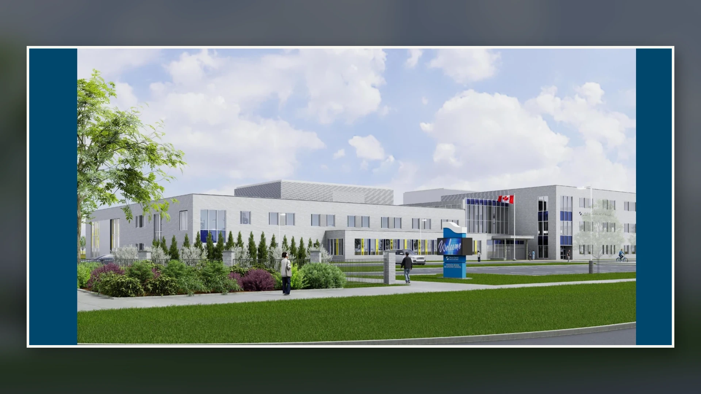

01
Education advocacy
Advocating for a public high school in Wasaga Beach.
As an elected public school board trustee, Mike supported the effort of many of his constituents to move a new public secondary school in Wasaga Beach higher on the board's capital-priority list and continued advocating as the project moved toward provincial approval.
The image shown is an artist's rendering of the proposed high school.
View the official project status